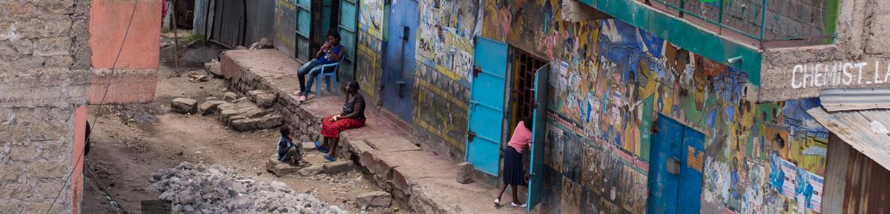
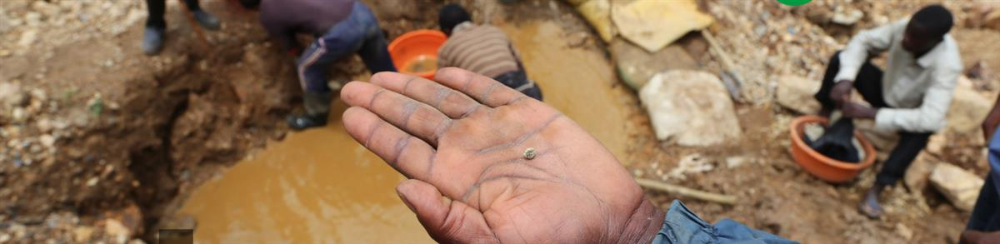
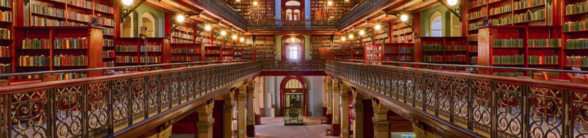
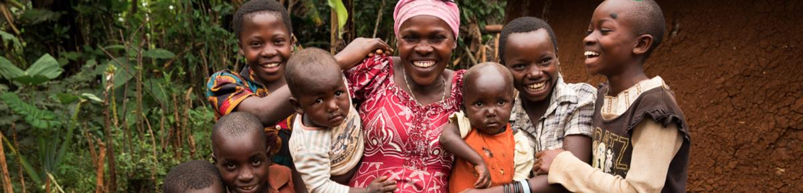
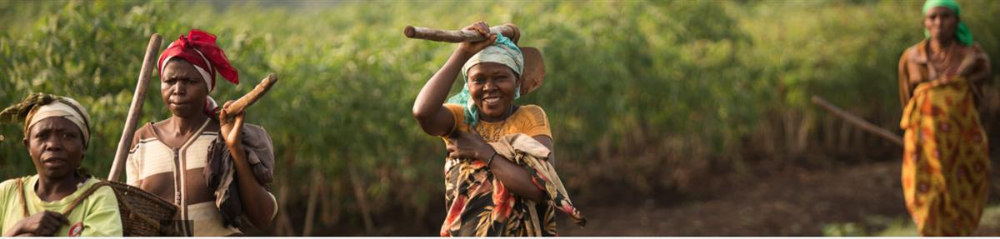
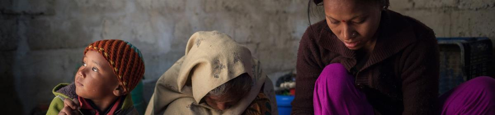
We are a Franciscan voice at the United Nations protecting the vulnerable, the forgotten, and our wounded earth through advocacy.FI seeks to promote greater social and environmental justice by increasing the respect and protection of human rights in global policies negotiated at the UN in New York and Geneva, related to sustainable development, business and human rights, and extreme poverty.
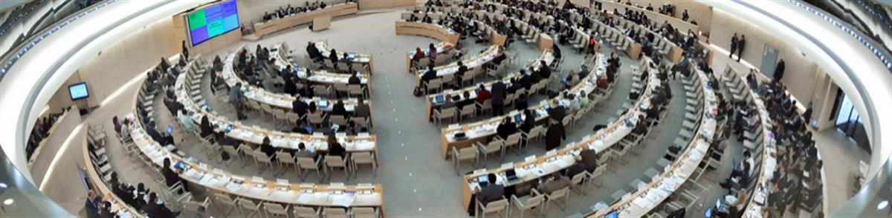
Why do we need greater social and environmental justice?
The current development model has increased inequalities in the distribution of economic and natural resources, and condemned an estimated 1.3 billion people to extreme poverty. Oxfam’s latest global inequality report states that the world’s richest 62 billionaires have as much wealth as the poorest 3.6 billion people. Most alarming is that the wealth of these richest 62 people has risen by 44 percent since 2010, while the wealth of the bottom half fell by 41 percent.
This model of economic growth, based on opening developing countries to unscrupulous and unchecked business and investment to attract foreign capital for fast profits, amounts to a race to the bottom in terms of human rights protection. Local communities, peasants, and indigenous people are inevitably among the first victims of the environmental degradation, conflict, inequality, landlessness, precarious working conditions, discrimination, violence, and impunity left in the wake of this economic globalization. Democratic spaces for affected individuals and communities to influence public policies are shrinking in parallel to the concentration of power. All this reveals an urgent and long overdue need for more robust regulatory and accountability international mechanisms.
In response, FI aims to push these issues up to the UN Agenda, to promote greater accountability for business, a rights-based approach to development and poverty reduction, and stronger regulation to improve international standards.
Thanks to its direct connections with movements at the grassroots, FI is often solicited when it comes to bringing firsthand information and denouncing specific issues at the UN.
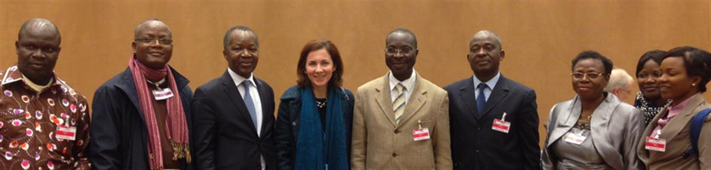
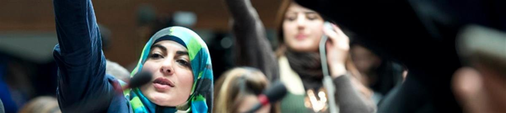
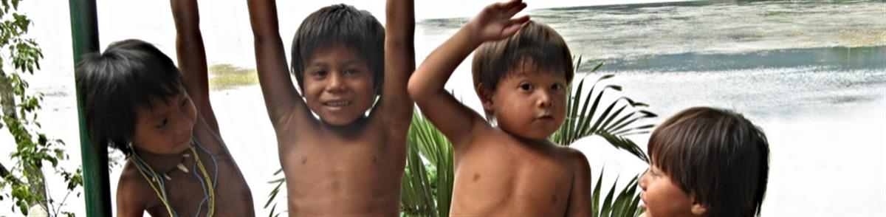
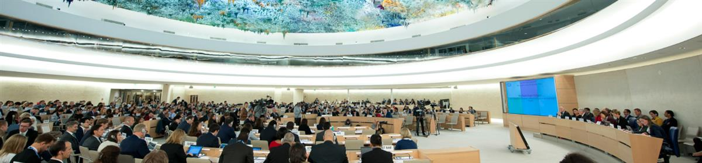
SOURCE: FRANCISCANS INTERNATIONAL